Act 1
Urmăriți ca videoclip pe YoutubeCUVÂNT ÎNAINTE
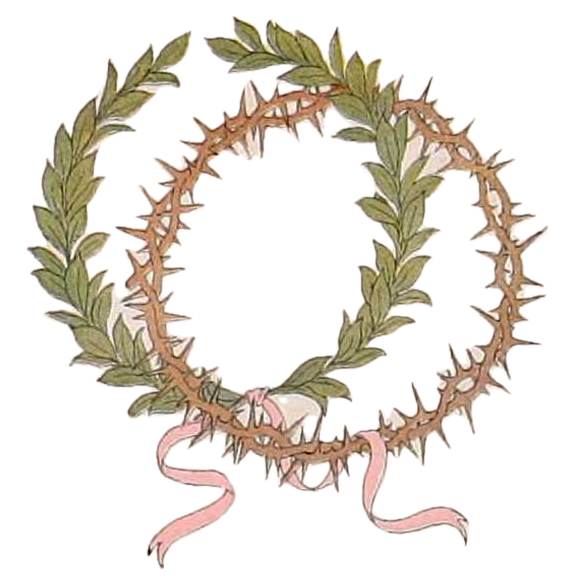 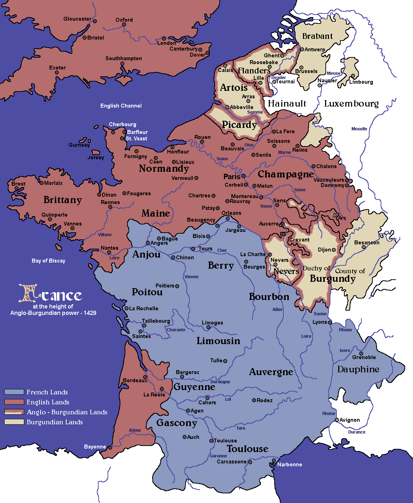La 22 octombrie 1422, Carol al VI-lea a murit, lăsând moștenire, prin Tratatul de la Troyes, regatul său cu mâna fiicei sale lui Henric al V-lea, rege al Angliei.
În secolul de când războiul ne-a devastat țara, niciodată independența noastră nu a fost atât de amenințată.
Stăpâni ai Guyennei, uniți pe de o parte cu Ducele de Burgundia, pe de altă parte sprijiniți de Ducele Bretaniei, englezii dețineau nordul și centrul Franței, până la Loara.
Orléans, asediat, a prezentat un ultim obstacol în marșul lor spre sud; dar oraşul fără ajutor avea să cedeze.
Delfinul Carol al VII-lea se refugiase la Bourges: un rege trist, fără armată, fără bani, fără energie. Câțiva curteni încă se întreceau pentru ultimele favoruri ale acestei monarhii care se scufundă, dar niciunul dintre ei nu era în stare să o apere și, de-a lungul țării înfometate, rămășițele armatei regale, trupe de războinici rutieri din toate sursele, reduse și demoralizate de înfrângerile recente de la Cravant și Verneuil, s-au retras incapabili de un nou efort.
Totul lipsea: oșteni, resurse, chiar și voința de a rezista. Carol al VI-lea, disperat de cauza sa, s-a gândit să fugă în Dauphiné, poate chiar dincolo de munți, în Castilia, abandonându-și regatul, drepturile și îndatoririle.
După ce nebunia lui Carol al VI-lea, indolența Delfinului și egoismul și incapacitatea nobilimii au dus la ruinarea țării, însuși neamul nostru avea să-și piardă naționalitatea.
Apoi, la granițele Lorenei, într-un sat îndepărtat, s-a ridicat o țărancă. Mișcată de milă de mizeriile sărmanilor din Franța, simțise în adâncul inimii primul fior al patriei. Cu mâna ei slabă, a luat marea sabie a Franței învinse și, cu pieptul ei firav făcând un bastion împotriva atâtor necazuri, a extras din energia credinței ei puterea de a ridica curajul pierdut și de a ne smulge țara din mâna englezilor învingători.
„Vin de la Domnul meu Dumnezeu”, a spus ea, „pentru a salva regatul Franței”.
Și a adăugat: „Pentru asta m-am născut”.
Pentru aceasta, de fapt, s-a născut ea, fata sfântă; de aceea, predată cu lașitate dușmanilor ei, a murit pradă celei mai crude torturi, părăsită de Regele pe care-l încoronase și de oamenii pe care îi salvase. Deschideți, dragii mei copii, această carte cu devotament în amintirea acestei umile țărănci care este patrona Franței, care este sfânta patriei așa cum a fost martira ei. Povestea ei îți va spune că pentru a câștiga, trebuie să ai încredere în victorie. Amintește-ți asta în ziua în care țara va avea nevoie de tot curajul tău.
Scene 1
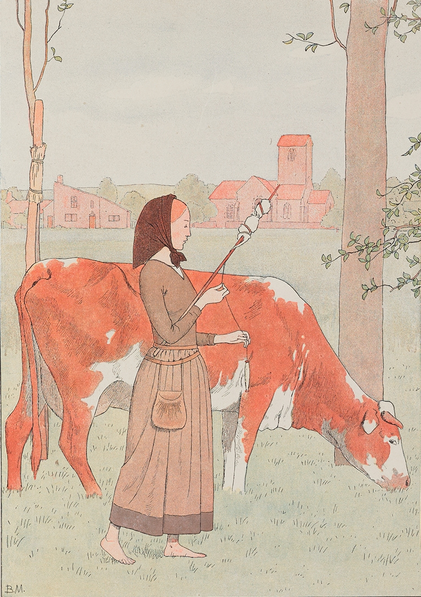Ioana s-a născut la 6 ianuarie 1412, în Domrémy, un mic sat din Lorena, dependent de județul Chaumont, sub coroana Franței.
Numele tatălui ei era Jacques d'Arc, iar mama ei era Isabelle Romée; erau oameni cinstiți, simpli muncitori care trăiau din munca lor.
Ioana a fost crescută împreună cu frații ei și cu sora ei într-o căsuță care încă mai poate fi văzută în Domrémy, atât de aproape de biserică încât grădina ei atinge cimitirul.
Copilul crește acolo sub ochii lui Dumnezeu.
Era dulce, simplă și dreaptă. Toți o iubeau pentru că știau că este caritabilă și cea mai bună fată din satul ei. Hârnică la muncă, își ajuta familia în sarcinile lor, în timpul zilei conducând animalele la pășune, sau participând la munca grea a tatălui ei, seara petrecând timp cu mama ei și asistând-o în îngrijirea gospodăriei.
Ea Îl iubea pe Dumnezeu și se ruga lui des.
Scene 2

Într-o zi de vară, când avea treisprezece ani, la amiază, a auzit un glas în grădina tatălui ei; a izbucnit o mare lumină și i s-a arătat arhanghelul Sfântul Mihail. El i-a spus să fie bună și să meargă des la biserică. Apoi, spunându-i de marea jale care era în regatul Franței, el a anunțat-o că va merge în ajutorul Delfinului și că îl va duce la Reims pentru încoronare.
„Domnule, sunt doar o sărmană fată, nu pot călări sau conduce ostași”.
„Dumnezeu te va ajuta”, a răspuns arhanghelul.
Iar copilul necăjit a rămas plângând.
Scene 3
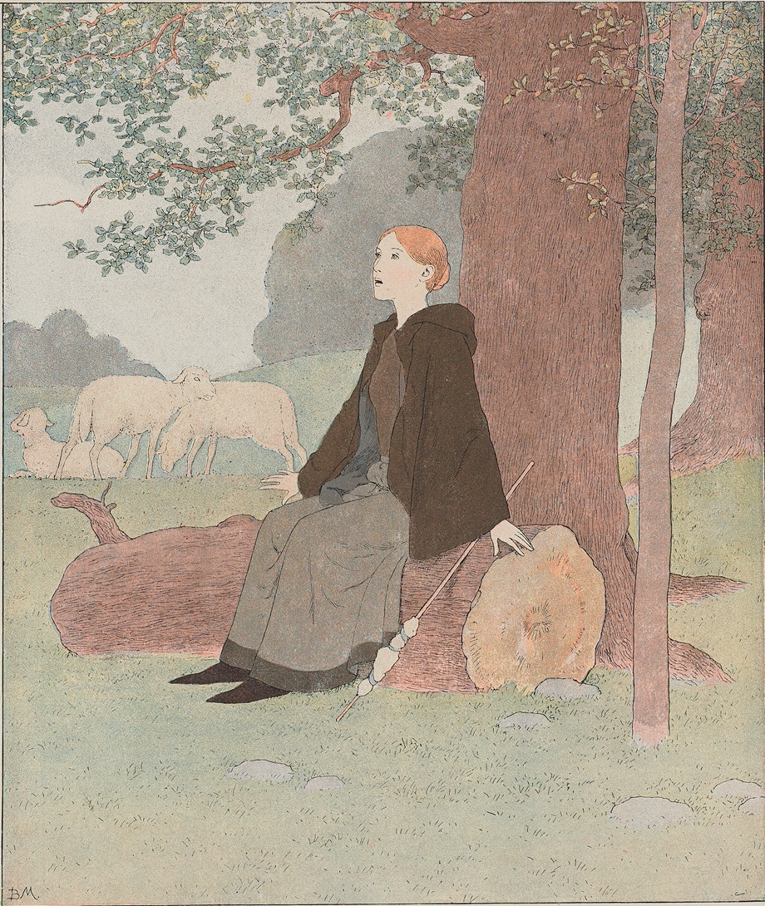Din acea zi, evlavia Ioanei a devenit și mai arzătoare; Copilul s-a despărțit de bunăvoie de tovarășii săi pentru a medita și auzea voci cerești care îi vorbeau despre misiunea ei. Ele erau, spunea ea, vocile sfinților ei. Adesea aceste voci erau însoțite de viziuni; I s-au arătat Sfânta Ecaterina și Sfânta Margareta.
„I-am văzut cu ochii trupului”, le-a spus ea mai târziu judecătorilor ei, „și când m-au părăsit, am plâns; Doream să mă ia cu ei.”
Copilul a crescut, spiritul ei exaltat de viziunile lui și păstrând adânc în inima ei secretul conversațiilor ei celeste. Nimeni nu bănuia ce se întâmplă în interiorul ei, nici măcar preotul la care se spovedea.
La începutul anului 1428, Ioana avea optsprezece ani, iar vocile au devenit mai urgente.
„Pericolul este mare, Ioana trebuie să plece pentru a-l ajuta pe rege și a salva regatul.”
Sfinții ei i-au poruncit să meargă să-l găsească pe Lordul Baudricourt, Lordul de Vaucouleurs și să-i ceară o escortă care să o ducă la Delfin.
Neîndrăznind să-și împărtășească cu părinții planul, Ioana s-a dus la Burey să-și găsească unchiul Laxart și l-a implorat să o ducă la Vaucouleurs. Ardoarea rugăminților ei a zguduit timiditatea țăranului; a promis că o va însoți.
Scene 4
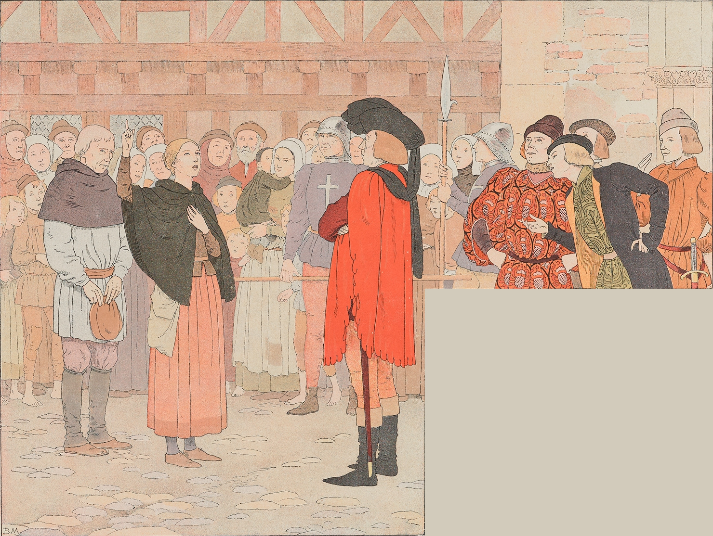Primirea lui Baudricourt a fost brutală. Ioana i-a spus „că a venit cu solie de la Dumnezeu, că Dumnezeu îi va porunci Delfinului să se poarte bine pentru că Domnul îi va da ajutor înainte de mijlocul Postului Mare”; ea a adăugat „că Dumnezeu a vrut ca Delfinul să devină Rege; că el va face acest lucru în ciuda dușmanilor săi și că ea însăși îl va conduce la încoronare”.
„Fata asta e nebună”, a spus Baudricourt, să o ducem înapoi la tatăl ei să-i dea o pereche de palme bune.”
Ioana s-a întors la Domrémy. Dar apăsată din nou de vocile ei, s-a întors la Vaucouleurs și l-a revăzut pe Lordul Baudricourt, insă fără să obțină o primire mai bună.
Scene 5
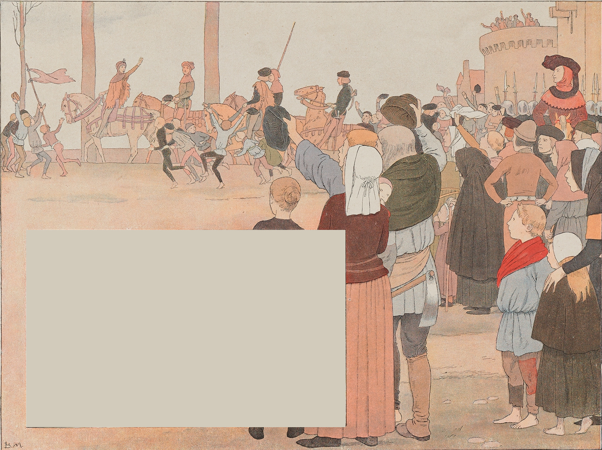Dar de data aceasta a rămas în Vaucouleurs.
Curând, singura tulburare din cetate a fost despre această tânără, care se plimba, spunând cu voce tare că va salva împărăția, că trebuie dusă la Delfin, că Dumnezeu asta vrea.
„Voi merge”, a spus ea, „chiar dacă ar fi să îmi tocesc picioarele până la genunchi”.
Oamenii, cu inimi simple, mișcați de credința ei, au crezut în ea. Un scutier, Jean de Metz, câștigat de mulțime, s-a oferit să o ducă la Chinon, unde se afla Carol al VII-lea. Bieții oameni, unindu-și sărăcia, au contribuit pentru a îmbrăca si înarma micuța țărancă. I-au cumpărat un cal și, în ziua stabilită, ea a pornit cu slaba ei escortă.
"Mergi! Și întâmplă-se orice!” i-a strigat Baudricourt.
"Fii binecuvântată!" au strigat săracii oameni, iar femeile au plâns când au văzut-o plecând.
Scene 6
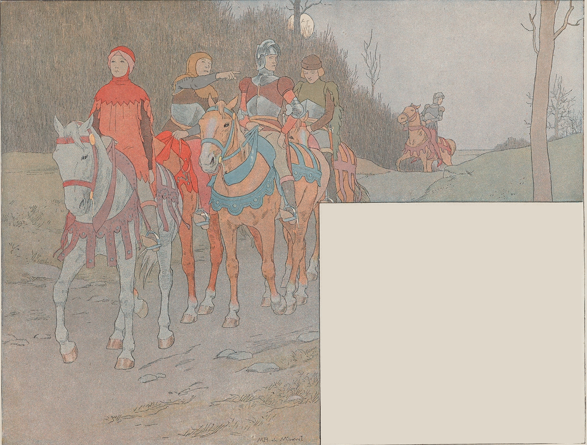Chinon era departe, iar călătoria era periculoasă. Partizanii englezi și burgunzi stăpâneau țara, iar trupa mică a fost obligată să treacă peste anumite poduri pe care inamicul le ocupa. Trebuiau să înainteze noaptea și să se ascundă ziua. Tovarășii Ioanei, speriați, planuiau deja întoarcerea la Vaucouleurs.
„Nu vă temeți de nimic, le-a spus ea, Dumnezeu îmi arată drumul, frații mei din ceruri îmi spun ce trebuie să fac”.
În a douăsprezecea zi, Ioana a ajuns la Chinon împreună cu tovarășii ei. Din cătunul Sfânta Ecaterina, ea trimisese regelui o scrisoare prin care îi anunța sosirea.
Curtea lui Carol al VII-lea a fost departe de a fi unanimă cu privire la primirea care ar trebui să i se facă. La Trémouille, favoritul zilei, invidios pe ascendența pe care Ioana o câștigase asupra stăpânului său, era hotărât să înlăture orice influență capabilă să-l smulgă pe Charles din toropeala lui. Timp de două zile, consiliul a discutat dacă Delfinul o va primi pe tânăra inspirată.
Scene 7
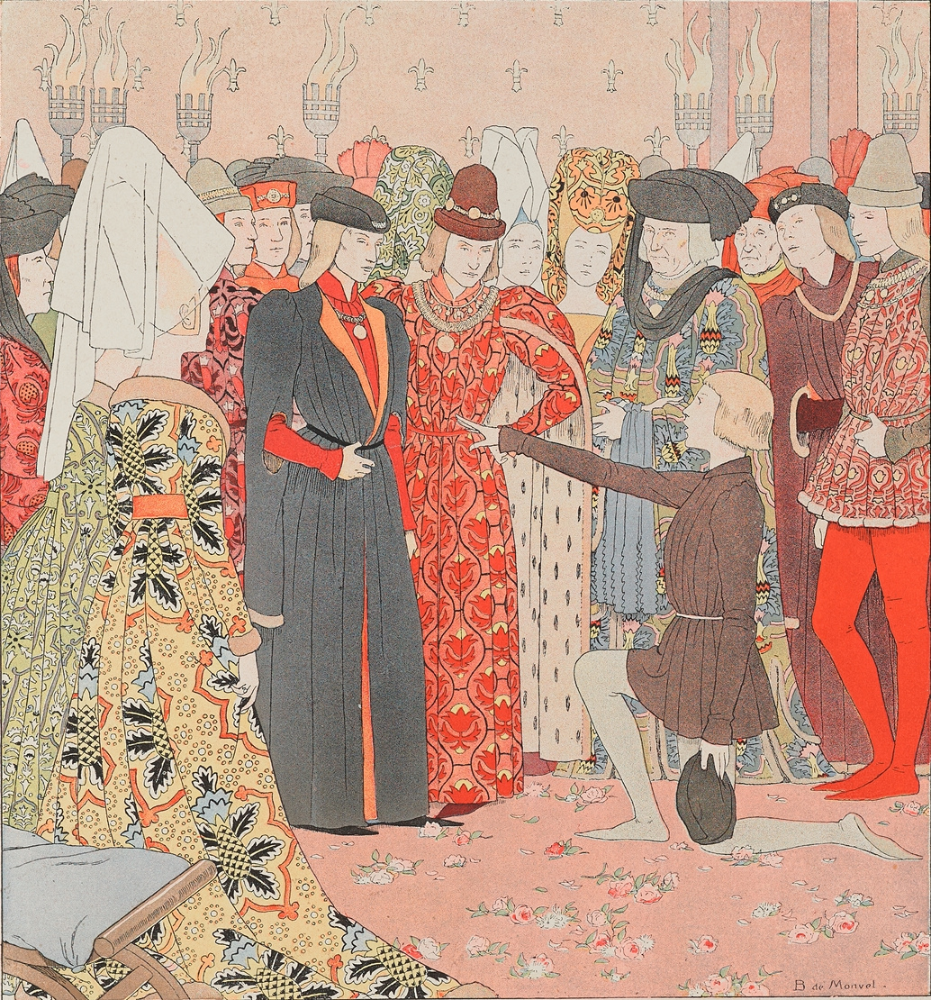În acel moment, din Orléans au sosit vești atât de tulburătoare, încât susținătorii Ioanei au reușit să se asigure că această șansă ultimă de salvare nu rămâne exclusă. Seara, la lumina a cincizeci de torțe, în sala mare a castelului, unde se înghesuiau toți domnii curții, a fost prezentată Ioana. Nu-l văzuse niciodată pe Rege. Carol al VII-lea, pentru a nu-i atrage atenția, a purtat un costum mai puțin luxos decât cel al curtenilor săi. La prima vedere, ea l-a distins printre toți și, îngenunchiind în fața lui:
„Dumnezeu să te binecuvânteze, bunule Delfin!” spuse ea
„Eu nu sunt Regele”, a răspuns el, „acesta este Regele”. Și i-a desemnat un alt domn.
„Tu ești, bunule prinț, și nimeni altul; Regele Cerurilor îți trimite cuvântul prin mine că vei fi încoronat”.
Și apropiindu-se de obiectul misiunii ei, ea i-a spus că Dumnezeu a trimis-o să îl ajute; ea a cerut să-i dea o armată, promițându-i că va ridica asediul Orléansului și că îl va duce la Reims.
Delfinul a rămas ezitant. Fata asta ar putea fi o vrăjitoare. A trimis-o la Poitiers pentru a se supune examenului doctorilor și eclesiasticilor.
Scene 8
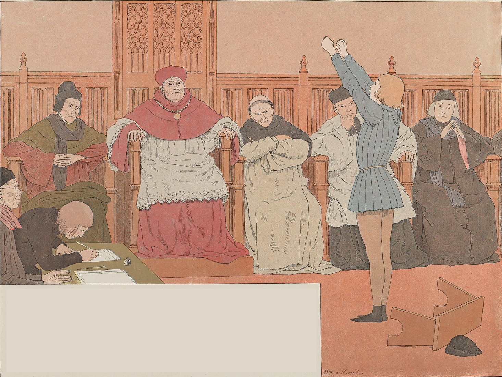Timp de trei săptămâni a fost torturată cu întrebări insidioase.
„Este mai mult în cartea lui Dumnezeu decât în a voastră”, a răspuns ea; „Nu cunosc nici A, nici B, dar vin de la Regele Cerurilor.”
Întrucât i s-a obiectat că Dumnezeu, pentru a elibera Franța, nu are nevoie de oameni înarmați, ea s-a ridicat deodată:
„Oamenii vor lupta, Dumnezeu va da victoria.”
Acolo, ca la Vaucouleurs, oamenii s-au declarat în favoarea ei, au considerat-o sfântă și inspirată. Doctorii bisericii și cei puternici au fost nevoiți să cedeze entuziasmului mulțimii.
Scene 9
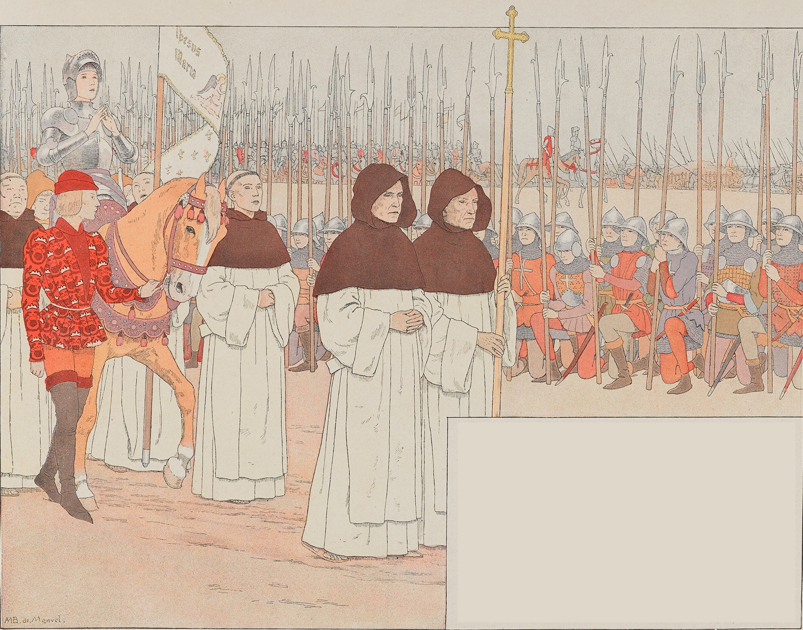Trupele s-au adunat la Blois. Ioana a sosit acolo, urmată de Ducele de Alençon, Mareșalul de Boussac, Lordul de Rais, La Hire și Xaintrailles.
Pe steagul ei avea brodate chipul lui Dumnezeu și numele lui Isus și Maria. Ea și-a sfătuit soldații să-și împace conștiința și să se spovedească înainte de a ieși la luptă. Joi, 28 aprilie, armata mică a pornit. Ioana a condus drumul, cu stindardul ei în vânt, pe cântecul „Veni, Creator”.
Voia să meargă drept spre Orléans; conducătorii au considerat că este mai prudent să treacă pe malul stâng al Loarei.
Scene 10

Armata și convoiul au ajuns la Chécy, la două leghe după Orléans.
Era vorba de trecerea Loarei; bărcile lipseau. Ioana a fost transportată pe malul celălalt cu o parte din escorta ei și cu convoiul de provizii. Restul trupelor au trebuit să se întoarcă la Blois, să revină la Orléans pe malul drept al Loarei, prin Beauce.
Scene 11
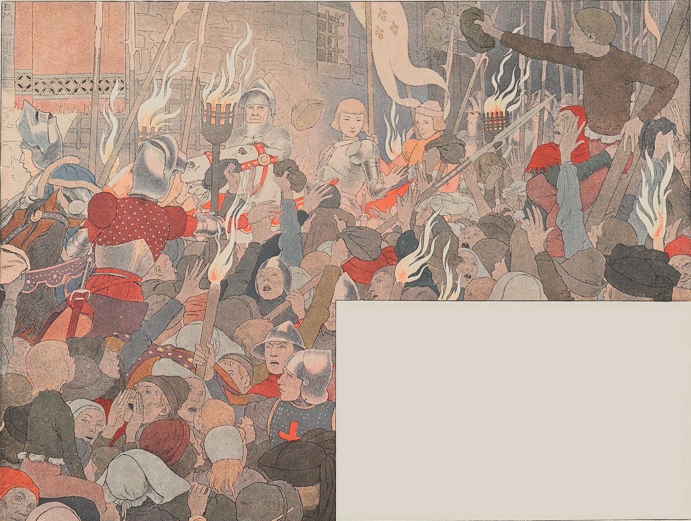Ioana îi spune lui Dunois, care venise să o întâlnească:
„Vă aduc cel mai bun ajutor, ajutorul Regelui Cerurilor; nu vine de la mine, ci de la Dumnezeu însuși, care, la cererea Sfântului Ludovic și a lui Carol cel Mare, a avut milă de orașul Orléans”.
La ora opt seara, Ioana a intrat în Orléans. Oamenii s-au grăbit să o întâlnească. La lumina torțelor, ea a traversat orașul în mijlocul unei mulțimi atât de înghesuite, încât îi era greu să-și croiască drum. Toți, bărbați, femei și copii, voiau să se apropie de ea sau măcar să-și atingă calul, arătând „o bucurie atât de mare de parcă l-ar fi văzut pe Dumnezeu coborând printre ei”.
„S-au simțit, spune jurnalul asediului, mângâiați și parcă ușurați de virtutea divină a acestei fete simple”.
Ioana le-a vorbit cu blândețe, promițându-le că îi va elibera.
Scene 12
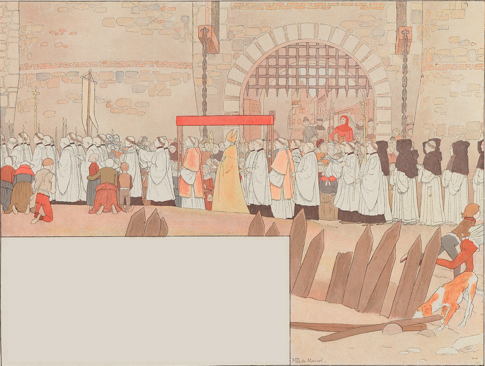Ea a cerut să fie dusă la o biserică, dorind mai presus de toate să-i mulțumească lui Dumnezeu.
După cum i-a spus un bătrân lui Ioana, vorbind despre englezi:
„Fiica mea, sunt puternici și bine întăriți și va fi un lucru grozav să-i înlături.”
ea a răspuns: „Nu este nimic imposibil pentru puterea lui Dumnezeu”.
Și, de fapt, încrederea ei a cucerit pe toți cei din jurul ei. Orleanienii, atât de înfricoșați și descurajați cu o zi înainte, acum fanatizați de prezența ei, au vrut să se arunce asupra inamicului și să-și înlăture bastioanele. Dunois, temându-se de eșec, a decis că vor aștepta sosirea restului armatei pentru a începe atacul. Între timp, Ioana i-a invitat pe englezi să se retragă și să se întoarcă în țara lor. Au răspuns cu insulte.
Scene 13
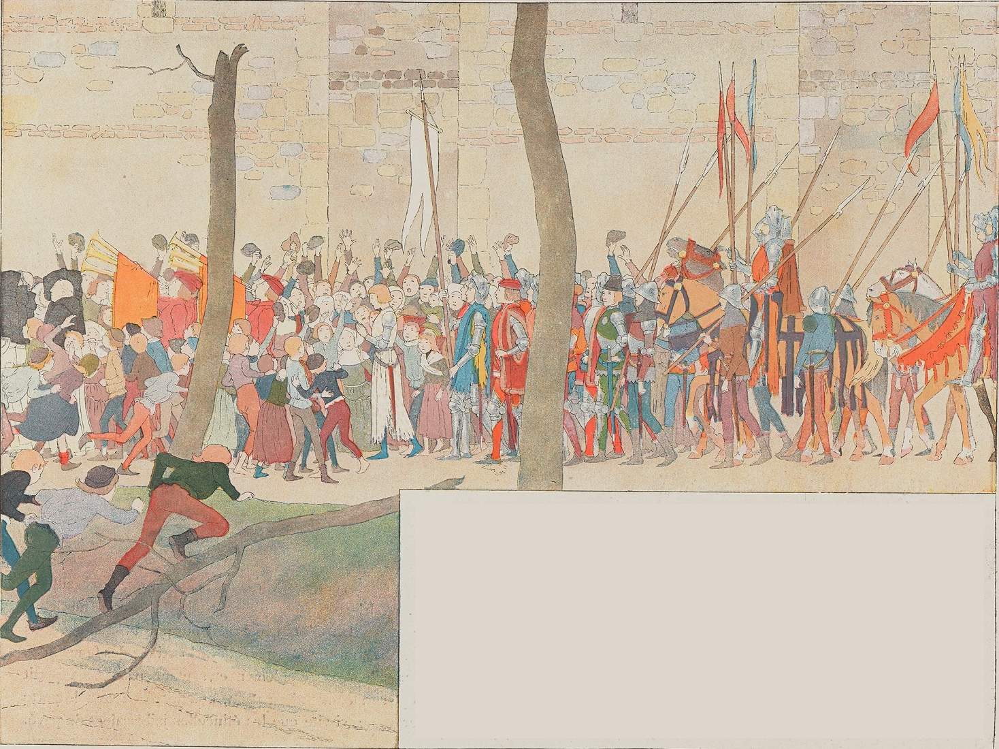Cu toate acestea, nu au primit nicio veste de la Blois. Dunois, îngrijorat, a plecat pentru a grăbi sosirea ajutorului. Era timpul. Arhiepiscopul de Reims, Regnault de Chartres, cancelarul regelui, reconsiderând deciziile luate, urma să trimită trupele înapoi în garnizoanele lor. Dunois a reușit să-i ducă la Orléans.
Miercuri, 4 mai, dimineața, Ioana, înconjurată de tot clerul orașului și urmată de o mare parte a populației, a părăsit Orléans; printre bastioanele engleze, ea a înaintat într-un mare cortegiu pentru a întâlni mica armată a lui Dunois, care a trecut sub protecția preoților și a unei fete, fără ca englezii să îndrăznească să o atace.
Scene 14
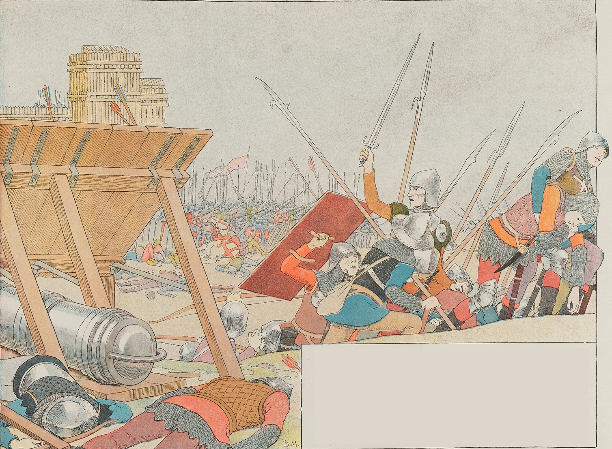În aceeași zi, când Ioana se odihnea, s-a trezit cu o tresărire.
"Ah! Doamne, strigă ea, sângele poporului nostru este vărsat pe pământ!... E greșit! De ce nu m-am trezit? Iute, armele mele, calul meu!"
Ajutată de femeile casei, s-a înarmat repede și, sărind în șa, a pornit în galop, cu stindardul în mână, alergând drept spre Poarta Bourgogne, atât de repede încât scântei au zburat de pe trotuar.
Scene 15
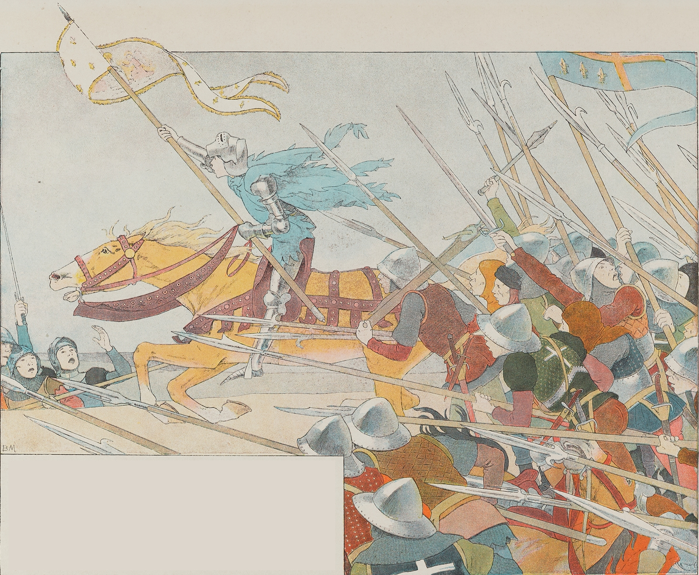De fapt, fără a o avertiza, bastida Saint-Loup fusese atacată. Atacul eșuase; francezii s-au retras în dezordine. Ioana a alergat să-i adune și, aducându-i înapoi în fața inamicului, a reînceput asaltul. Degeaba a încercat Talbot să-și ajute oamenii. Ioana, stând la poalele meterezelor, și-a încurajat oamenii. Timp de trei ore englezii au rezistat. În ciuda apărării lor disperate, bastida a fost luată.
Scene 16
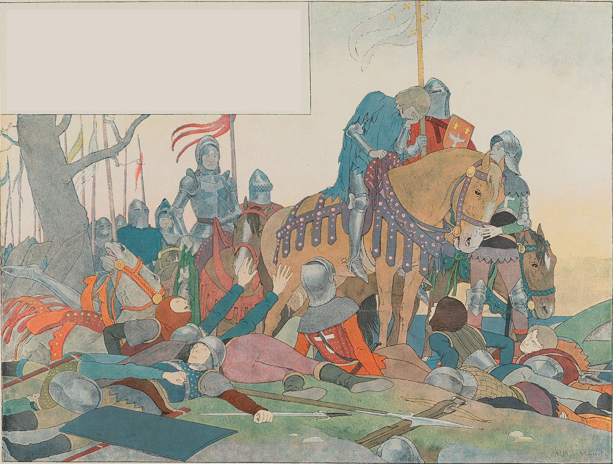Ioana s-a întors învingătoare la Orléans. Dar pe când, în bucuria succesului ei, s-a întors spre cetate, trecând câmpul de luptă, și-a simțit inima topindu-se de durere la vederea răniților și a celor uciși și a început să plângă, crezând că au murit fără mărturisire. Și ea a spus „că nu mai văzuse niciodată sângele Franței vărsat înainte. I s-a ridicat părul pe cap.”
Scene 17
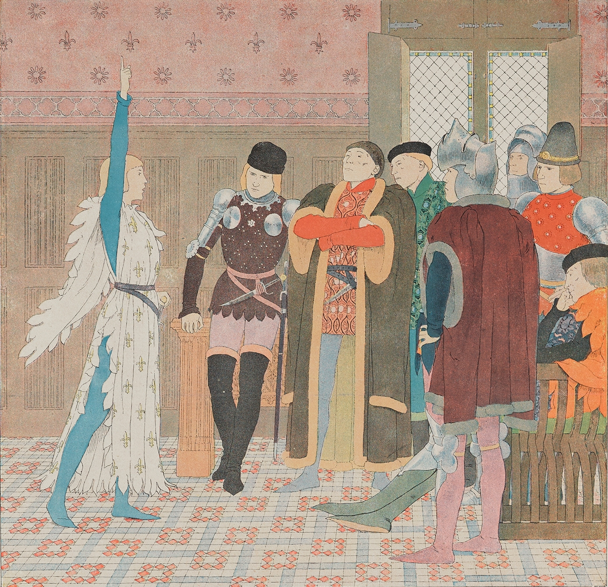Totuși, era necesară o decizie despre cum va fi continuat acest atac care a început atât de fericit împotriva englezilor.
Șefii, nedorind să se lase conduși de o fată de la țară sau să împartă cu ea gloria succesului, s-au întâlnit în secret pentru a discuta planul de adoptat.
Ioana s-a prezentat la consiliu; iar cancelarul ducelui de Orléans a căutat să-i ascundă deciziile care fuseseră luate:
„Spuneți care este decizia și ce ați vorbit”, strigă ea, indignată de aceste subterfugii; „Eu pot ascunde ceva mai măreț!” ea a adăugat:
„Voi ai fost în sfatul vostru, iar eu am fost în al meu, și cred că sfatul lui Dumnezeu se va împlini și va rămâne ferm și al vostru va pieri. Treziți-vă devreme mâine dimineață, căci vom avea multe de făcut, mai mult decât am avut vreodată”.
Scene 18
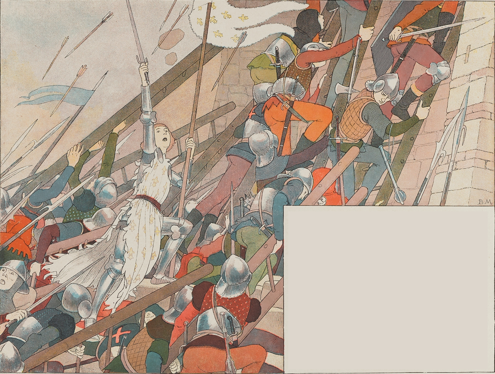A doua zi, 6 mai, au capturat bastilia augustiniană. Sâmbătă 7, dis-de-dimineață, a început atacul asupra bastiliei Tournelles. Ioana, coborâtă în șanț, ridica o scară pe parapet, când o săgeată de arbaletă a străpuns-o chiar între gât și umăr. Ea a smuls fierul din rană; i s-a oferit apoi să farmece rana, ea a refuzat, spunând „că preferă să moară decât să facă orice este împotriva voinței lui Dumnezeu”. S-a mărturisit și s-a rugat mult timp în timp ce trupele ei se odihneau. Apoi, dând ordin de reluare a asaltului, ea s-a aruncat în focul luptei, strigând atacatorilor:
„Bastionul este al tău, intră!”
Bastionul a fost cucerit și toți apărătorii au pierit. Pe malul stâng al Loarei nu a mai rămas nici un englez.
Scene 19
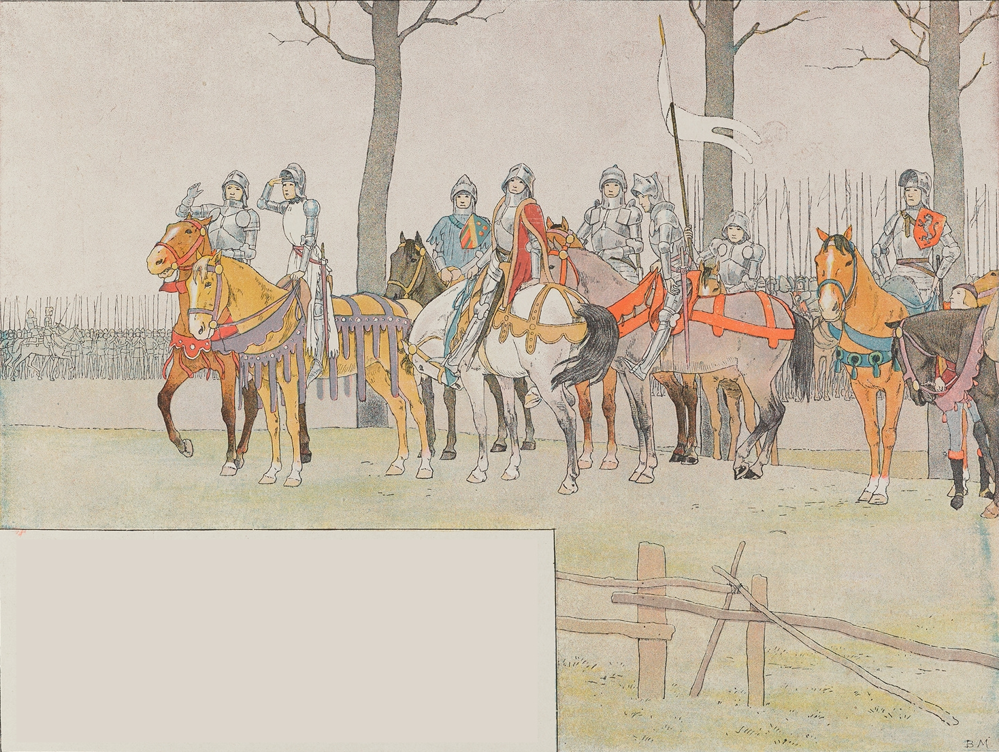Duminică, englezii s-au aliniat pentru luptă pe malul drept al Loarei. Ioana a interzis să fie atacați. Ea a ridicat un altar, iar liturghia a fost celebrată în prezența armatei adunate. Ceremonia fiind încheiată, ea le-a spus celor din jur:
„Vedeți dacă englezii au fețele întoarse spre noi sau spatele!” Și când i s-a spus că se retrag în direcția Meung:
„În numele lui Dumnezeu, dacă se duc, lăsați-i să plece; nu-i place Domnului Dumnezeu să luptăm cu ei astăzi, îi veți bate altă dată.”
Orléans, asediat timp de opt luni, a fost eliberat în patru zile.
Scene 20
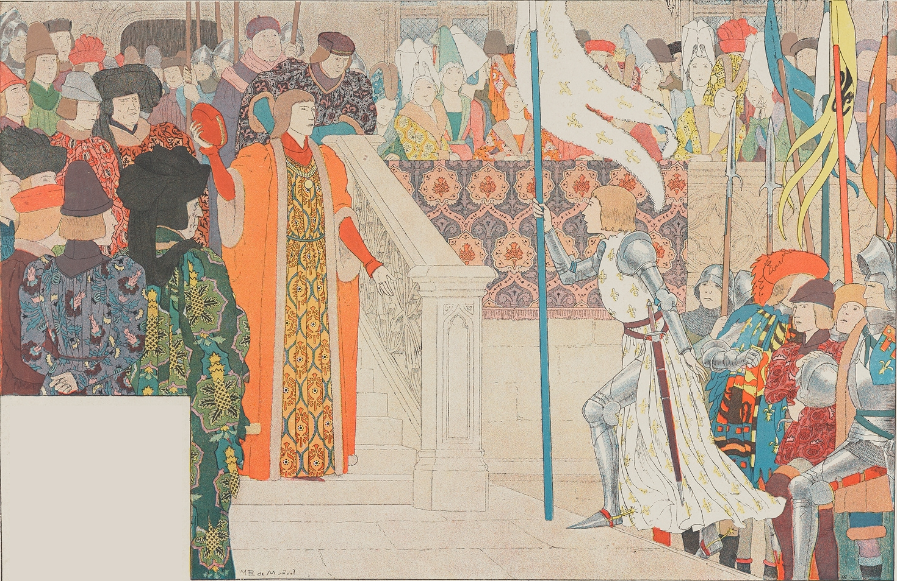Vestea eliberării Orléansului s-a răspândit în toată lumea, atestând divinitatea misiunii lui Ioana.
Fata sfântă, evitând recunoașterea orleanilor, s-a întors în grabă la Chinon. Ea a vrut, profitând de entuziasmul suscitat în jurul ei, să plece imediat la Reims, luându-l cu ea pe Delfin pentru a-l încorona. Charles a primit-o cu mari onoruri, dar a refuzat să o urmeze. A acceptat devotamentul acestei fete eroice, dar a înțeles că eforturile ei generoase nu vor tulbura în niciun fel inerția lașă a vieții lui luxoase.
S-a hotărât ca Ioana să atace locurile pe care englezii le mai dețineau pe malurile Loarei.
Scene 21
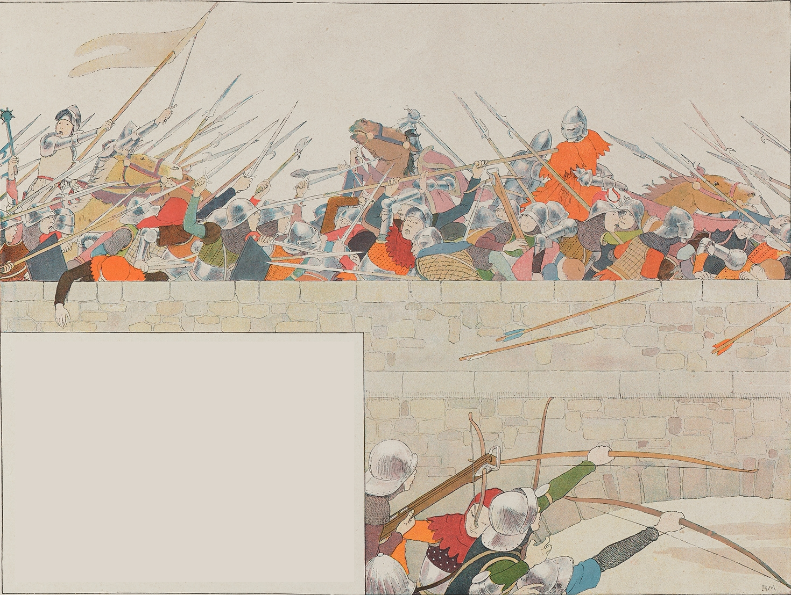Pe 11 iunie, francezii au ocupat suburbia Jargeau. A doua zi, la prima oră dimineață, Ioana a dat semnalul de luptă. Ducele de Alençon a vrut să amâne asaltul:
"Înainte, bunule duce, la atac! Nu te îndoi, este ceasul plăcut lui Dumnezeu; lucrează și Dumnezeu va lucra."
Ea însăși a urcat pe scară; a fost doborâtă de o piatră care a lovit-o în cap. Dar ea s-a ridicat, strigând poporului ei:
"Prieteni, sus! Sus! Tatăl nostru i-a condamnat pe englezi; ei sunt ai noștri la ora asta; aveți curaj!"
Meterezele au fost urcate. Englezii, urmăriți până la podul orașului, au fost prinși și uciși. Suffolk a fost luat prizonier.
Pe 15, francezii au preluat controlul asupra podului Meung;
pe 16, au asediat Beaugency;
pe 17 orasul a capitulat.
Scene 22
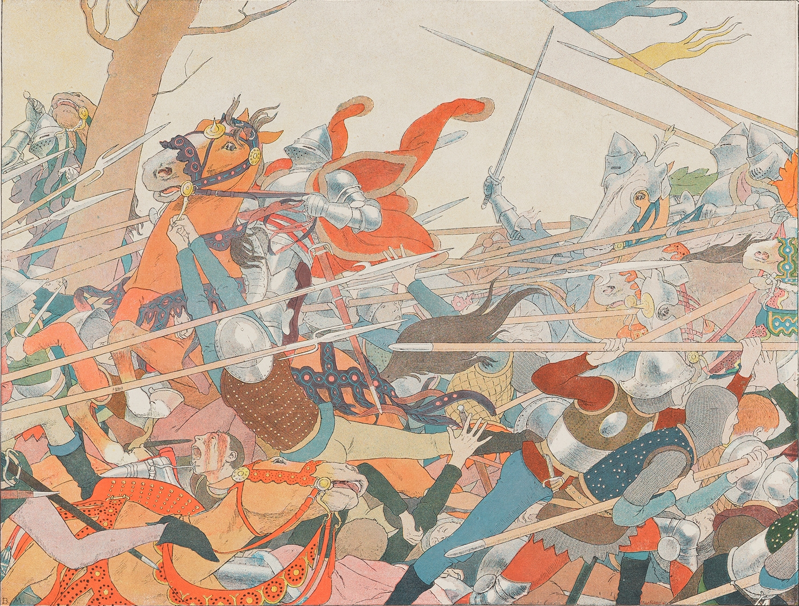 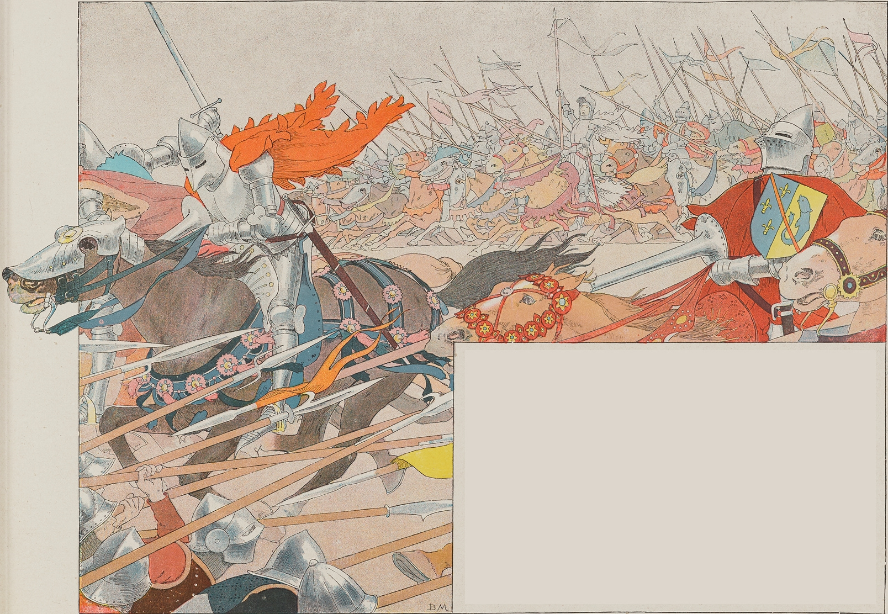Pe 18 iunie, Ioana a ajuns, lângă Patay, armata engleză condusă de Talbot și Fastolf.
„În numele lui Dumnezeu trebuie să luptăm cu ei”, a spus ea; "Chiar dacă se agață de nori, ii vom invinge, pentru că Dumnezeu ni-i trimite ca să-i pedepsim. Regele nostru bun va avea astăzi cea mai mare victorie pe care a avut-o vreodată."
Ea a vrut să meargă în avangarda, dar a fost reținută, iar La Hire a fost însărcinat să-i atace pe englezi pentru a-i obliga să se întoarcă, pentru a le da timp trupelor franceze să sosească. Dar atacul lui La Hire a fost atât de impetuos încât totul a cedat înaintea lui. Când Ioana a venit cu armata ei, englezii se retrăgeau în dezordine. Retragerea lor a devenit o debandadă.
Talbot a fost luat prizonier.
„Nu credeai în această dimineață că ți se va întâmpla asta”, a spus ducele de Alençon.
"Este un noroc specific războiului", răspunse Talbot.
Scene 23
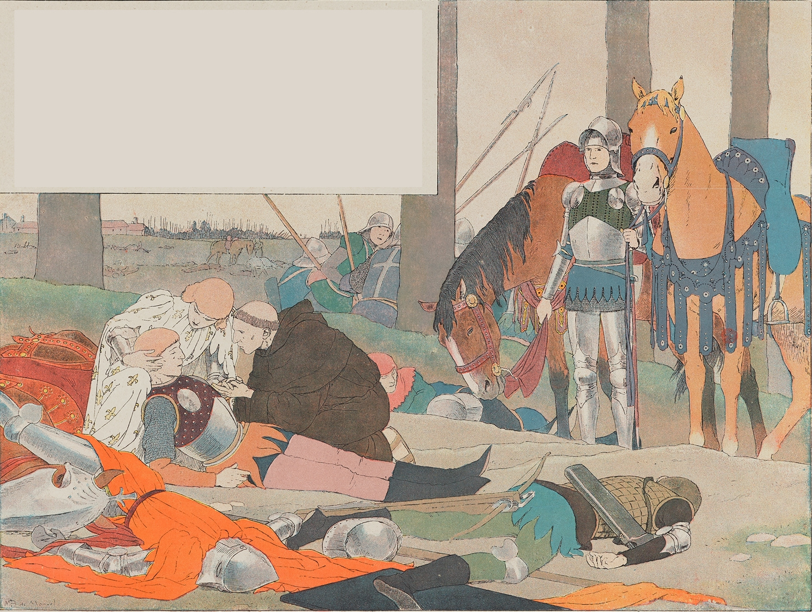Englezii au pierdut patru mii de morți. Două sute de prizonieri au fost luați. Numai cei care puteau plăti o răscumpărare erau cruțați; ceilalţi au fost ucişi fără milă.
Unul dintre ei a fost bătut atât de brutal în fața Ioanei, încât ea a sărit de pe cal să-l ajute. Ea a ridicat capul bietului om, i-a adus un preot, l-a consolat și l-a ajutat să moară.
Inima ei era la fel de îndurerată pentru englezii răniți ca și pentru cei din neamul ei.
În plus, ea a sfidat loviturile și a fost adesea rănită, dar nu a vrut niciodată să-și folosească sabia; stindardul ei era singura ei armă.
Scene 24
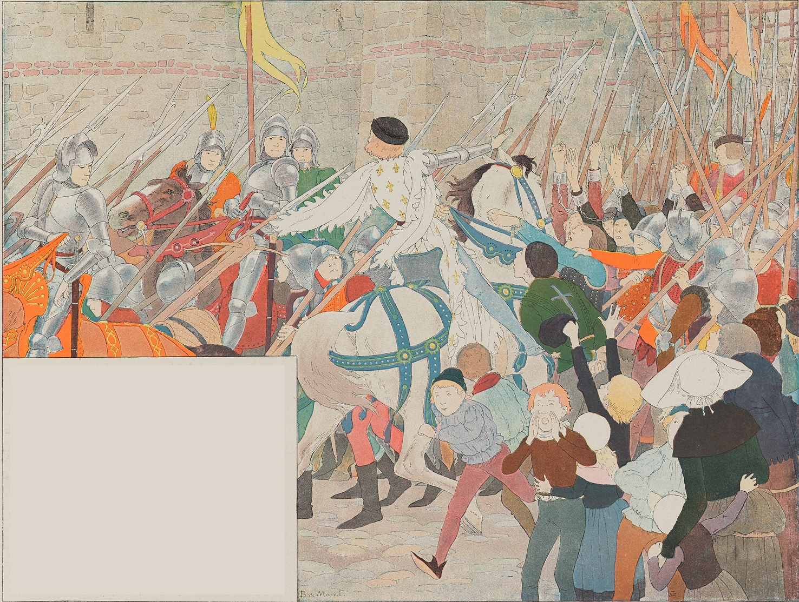Soldații, englezi și burgunzi, care formau garnizoana în Troyes au putut părăsi orașul cu tot ce aveau. Ceea ce aveau erau în principal prizonieri, francezi. La întocmirea capitulării nu se stipulase nimic în favoarea acestor nefericiţi. Dar când englezii au părăsit orașul cu prizonierii lor legati de gat, Ioana s-a aruncat in drum.
„În numele lui Dumnezeu, nu îi vei lua!” a strigat ea.
Ea a cerut ca prizonierii să-i fie predați și ca răscumpărarea lor să fie plătită de Rege.
Scene 25
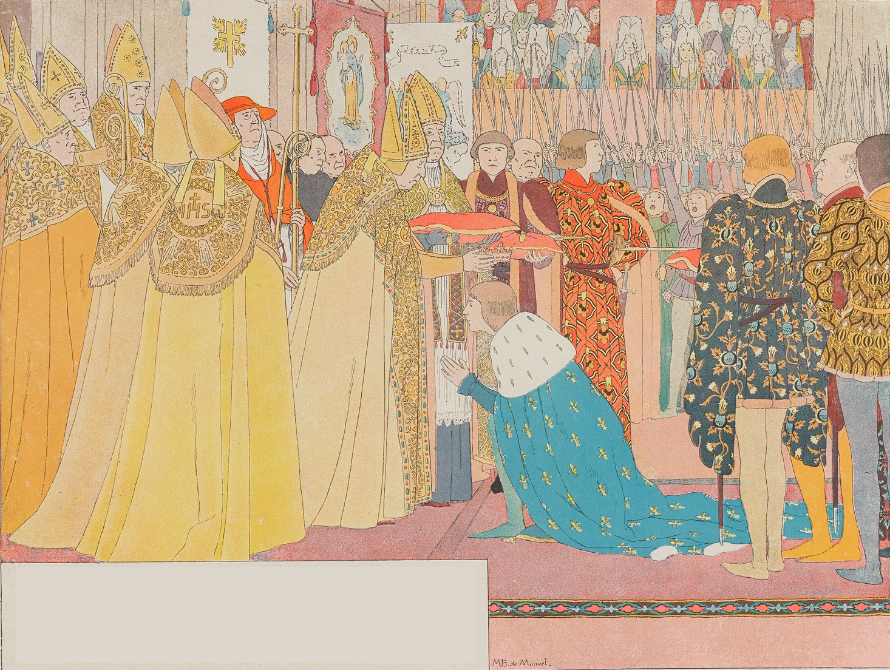Pe 16 iulie, Regele a intrat în orașul Reims în fruntea trupelor sale. A doua zi, ceremonia de încoronare a avut loc în catedrală, în mijlocul unui mare adunare de domni și oameni. Ioana stătea în spatele regelui, cu stindardul ei în mână;
„Stindardul acesta a avut de suferit, este corect să fie în centrul atenției”.
Scene 26
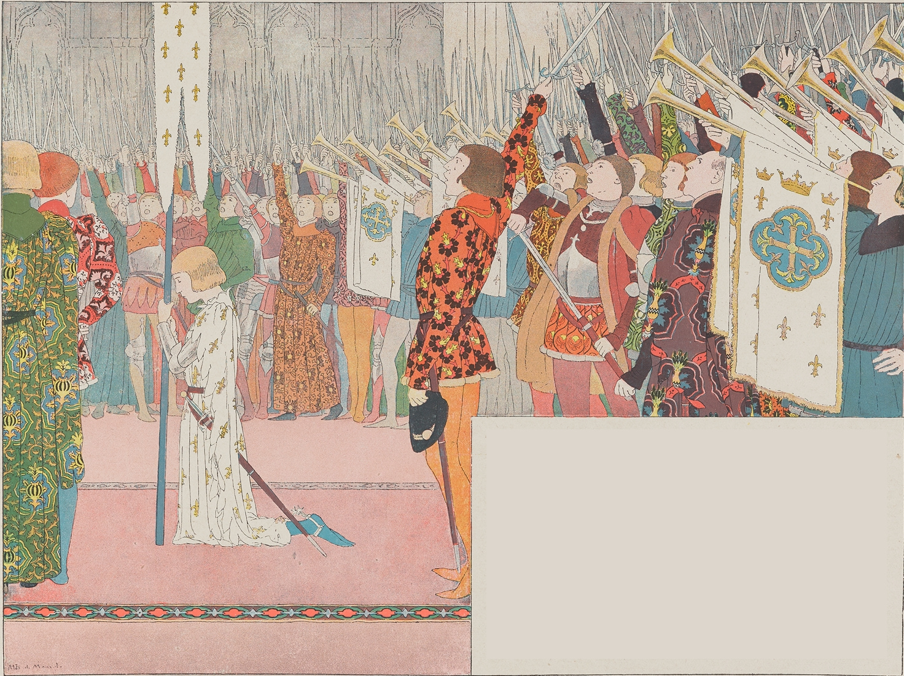Când Carol al VII-lea a primit ungerea sacră și coroana de la arhiepiscopul Regnault de Chartres, Ioana s-a aruncat la picioarele lui, sărutându-i genunchii și vărsând lacrimi fierbinți.
„O, bunule Sire”, a spus ea, „acum s-a împlinit voia lui Dumnezeu care a vrut să vă aduc în orașul vostru Reims pentru a primi sfânta voastră încoronare, arătând că sunteți adevăratul rege și că regatul Franței trebuie să vă aparțină!"
„Toți cei care au văzut-o în acel moment”, spune vechea cronică, „au crezut mai mult ca niciodată că este de la Dumnezeu”.
„O, oameni buni și devotați”, a strigat sfânta fată, văzând entuziasmul mulțimii din jurul regelui, „dacă trebuie să mor, aș fi foarte fericită dacă m-ar îngropa aici!”
Scene 27
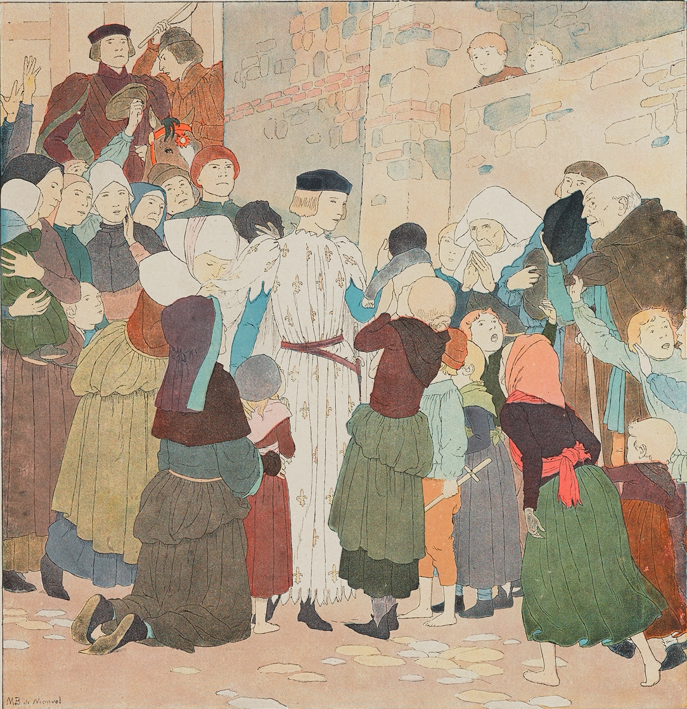Nimica nu era ca nerăbdarea oamenilor de a o atinge pe Ioana. Era vorba despre cine să-i sărute mâinile sau hainele, cine să o atingă. Copiii mici i-au fost prezentați pentru a-i binecuvânta, mătăniile, imaginile sfinte pentru a le sfinți atingându-le cu mâna. Iar fata umilă a respins cu grație aceste semne de adorație, glumând cu blândețe cu bieții oameni despre credulitatea lor în puterea ei. Dar ea a întrebat în ce zi și la ce oră se împărtășesc copiii săracilor, să meargă să fie in comuniune cu ei.
Mila ei a fost pentru toți cei care au suferit, dar tandrețea ei a fost toată pentru cei mici și umili. Se simțea ca sora lor, știind că s-a născut dintr-unul dintre ei. Când mai târziu a fost criticată pentru că a tolerat această adorație a mulțimii, Ioana va răspunde pur și simplu:
„Mulți oameni m-au căutat de bunăvoie și mi-au sărutat mâinile fără permisiunea mea, dar săracii au venit de bunăvoie la mine pentru că nu le-am displăcut”.
Scene 28
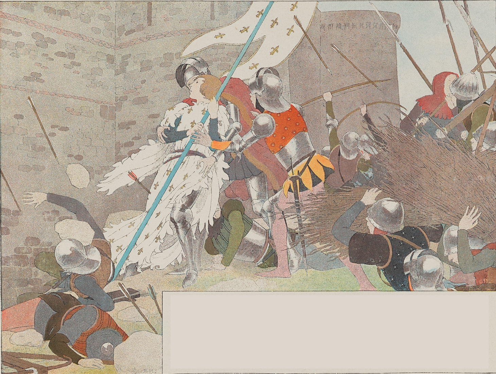După încoronarea din Reims, Ioana a vrut să se îndrepte puternic spre Paris și să recupereze capitala regatului. Nehotărârea regelui a dat timp englezilor să-și facă pregătirile de apărare. Asaltul a fost respins; Ioana a fost rănită de o arbaletă la coapsă.
A trebuit să fie luată cu forța de la poalele meterezelor pentru a o obliga să oprească lupta. A doua zi, Regele s-a opus reluării atacului; Ioana, însă, a fost responsabilă pentru lipsa succesului.
De prea mult timp Charles fusese târât pe drumuri; era nerăbdător să-și reia viața indolentă în castelele sale din Touraine.
Scene 29
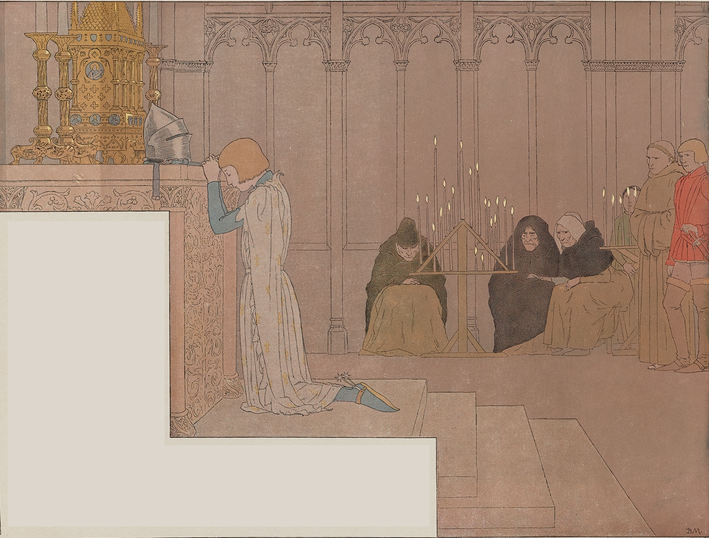Această retragere impusă de lașitatea lui Carol al VII-lea și gelozia curtenilor a fost un atac teribil asupra prestigiului Ioanei.
De acum înainte, în ochii tuturor, ea a încetat să mai fie invincibilă. Sfânta fată pare să fi înțeles acest lucru, pentru că, înainte de a părăsi Parisul, s-a dus să așeze ca ofrandă, pe altarul din Saint-Denis, armele ei biruitoare de până atunci. S-a rugat mult timp. Poate că în acel moment a avut un presentiment că misiunea ei glorioasă s-a încheiat și că urmau încercări dureroase. Cu toate acestea, ea s-a supus și, cu moartea în suflet, l-a urmat pe Rege până la Gien. Armata a fost desființată. Curtenii au crezut că s-au luptat destul. Mai mult, era important ca, în gelozia lor, să pună capăt succesului Ioanei.
Scene 30
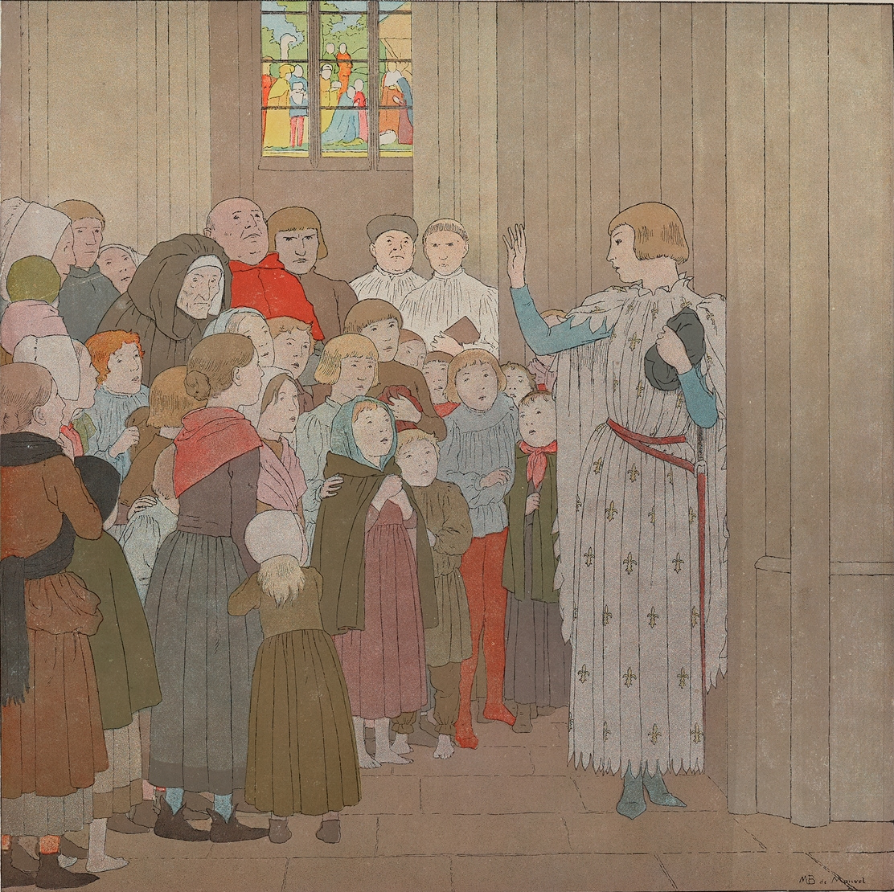Dar Ioana nu se putea resemna cu inacțiunea pe care doreau să i-o impună. Abandonată, fără ajutor în timpul asediului La Charité, ea a înțeles că acum nu mai avea nici o speranță de ajutor din partea lui Carol al VII-lea. La sfârșitul lunii martie (1430), fără să acordul regelui, ea a plecat să se alăture partizanilor francezi care se luptau împotriva englezilor la Lagny.
Acum, în săptămâna Paștelui, pe când tocmai auzise slujba și se împărtășise în biserica Saint-Jacques de Compiègne, ea s-a retras lângă un stâlp al bisericii și a început să plângă. Oamenii și copiii o înconjurau - ea le-a spus:
„Copiii mei și dragii mei prieteni, vă spun că am fost vândută și trădată și că în curând voi fi dată morții. Vă rog să vă rugați pentru mine, pentru că nu voi mai avea puterea de a fi de folos pentru Regele și Regatul Franței”.
Scene 31
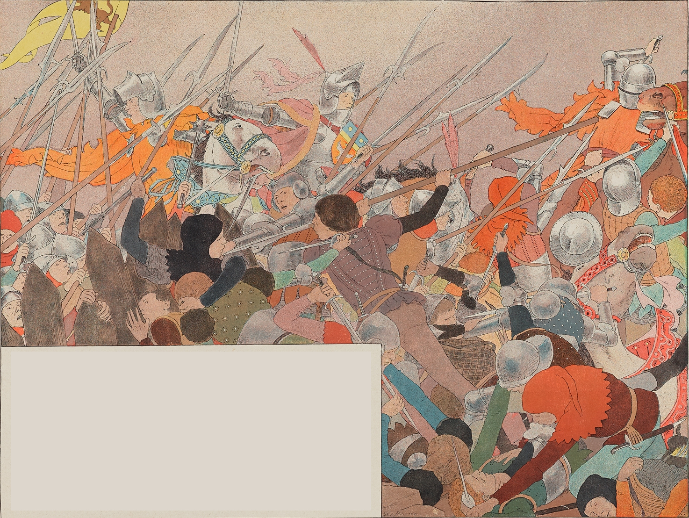Pe 23 mai, pe când se afla în Crespy, a aflat că orașul Compiègne era aproape încercuit de englezi și de burgunzi.
S-a dus acolo cu patru sute de luptători și a intrat în oraș pe 24, la răsărit. Apoi, luând cu ea o parte din garnizoană, i-a atacat pe burgunzi. Dar când englezii au venit să o atace, francezii s-au retras.
„Nu va gândiți la nimic altceva decât cum să trageți în ei”, a strigat Ioana, „de voi depinde ca ei să se descurajeze!”
Dar Ioana a fost târâtă de retragerea oștenilor ei. Aduși înapoi sub meterezele cetății Compiègne, francezii au găsit podul ridicat și grila coborâtă. Totuși, Ioana, forțată în șanț, s-a apărat în continuare.
Scene 32
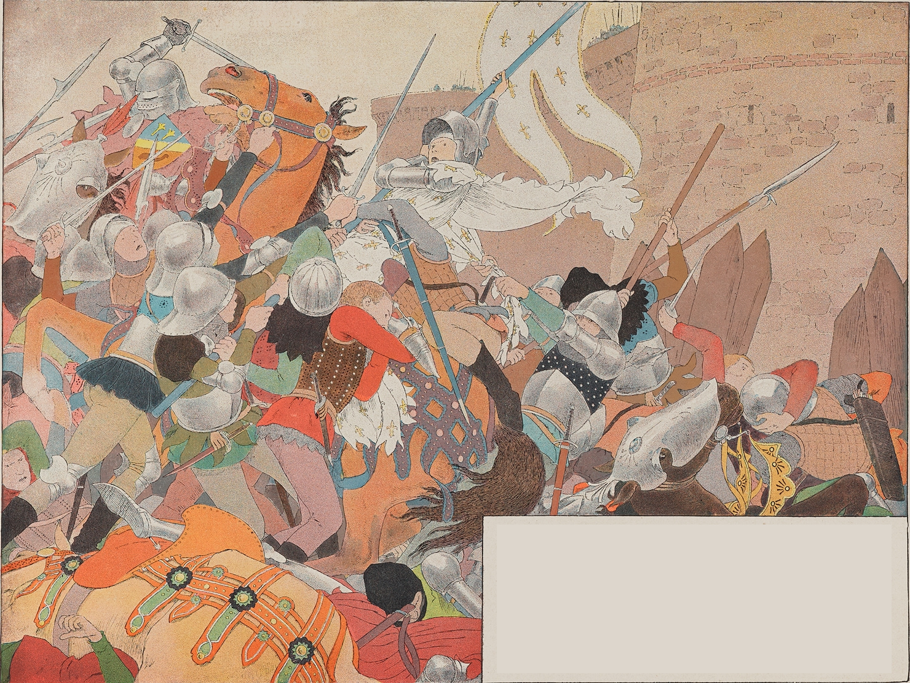O trupă o atacase.
"Predă-te singură!" i-au strigat ei. „Am jurat și mi-am jurat credința altcuiva decât vouă”, a răspuns fata curajoasă, „și îmi voi ține jurământul!”
Dar degeaba a rezistat. Trasă de hainele ei lungi, a fost doborâtă de pe cal și luată. Din vârful meterezelor orașului, Lordul Flavy, guvernatorul Compiègne, a asistat la capturarea sa. Nu a făcut nimic pentru a o ajuta.
Scene 33
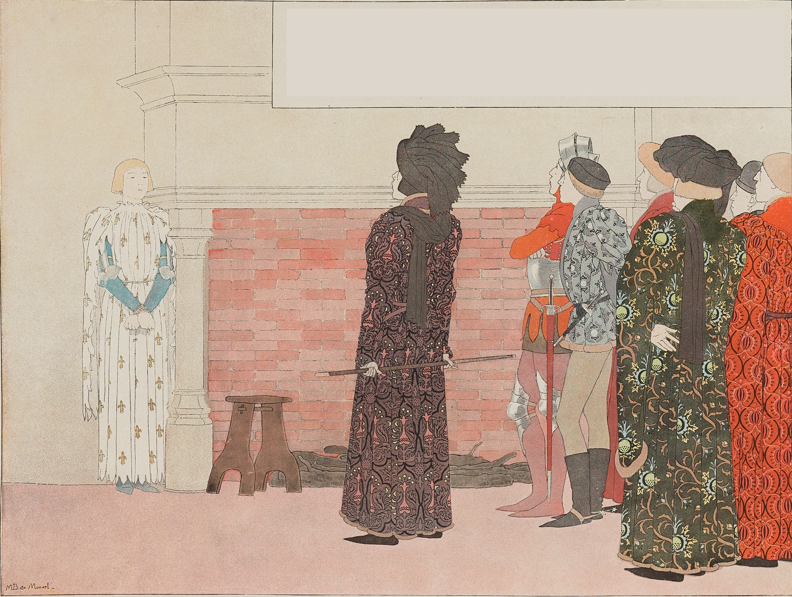Ioana a fost dusă la Margny în mijlocul strigătelor de bucurie ale dușmanilor ei. Sefii englezi si burgunzi si insusi ducele de Burgundia au venit in fuga sa o vada pe vrajitoare. S-au trezit față în față cu o fată de optsprezece ani. Ioana era prizonierul lui Ioan de Luxemburg, un domn fără avere, care nu dorea decât să profite de pe urma capturării ei. Regele Franței nu a făcut nici o ofertă de răscumpărare a captivei.
Scene 34
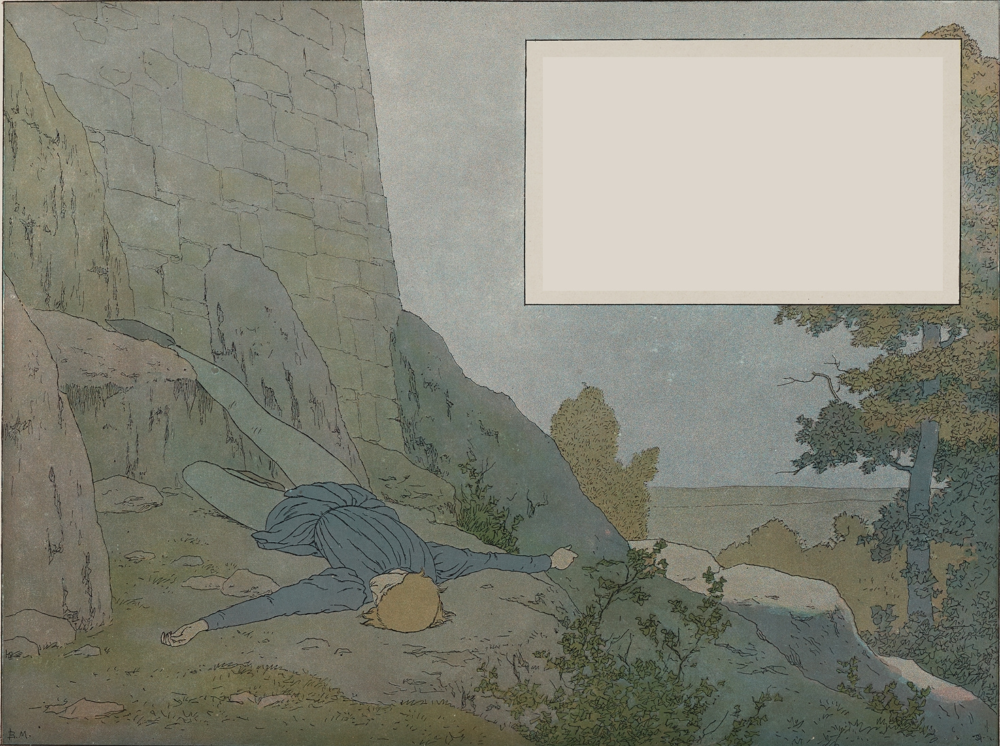Ioana a fost închisă în castelul de Beaurevoir. Dar, știind că englezii voiau să o cumpere de la Lordul Luxemburgului, și, de asemenea, că asediul cetății Compiègne înainta și că orașul urma să cedeze, într-o noapte ea s-a lăsat să alunece din vârful donjonului, folosind niște curele care s-au rupt. Ea a căzut la picioarele zidului și a rămas acolo aproape moartă.
Ioana, însă, își revine din cădere.
Un final mai crud îi era pregătit.
La sfârșitul lunii noiembrie, a fost predată englezilor pentru o sumă de zece mii de lire.
Scene 35
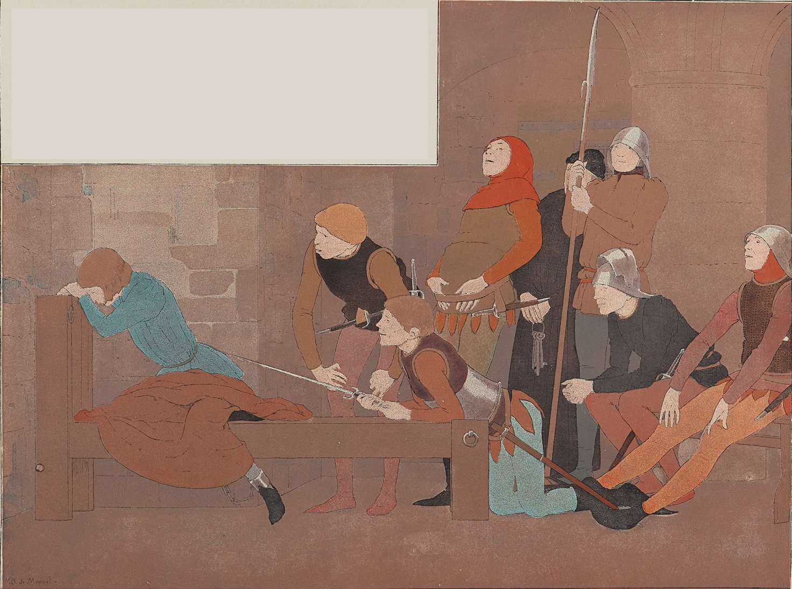Închisă în închisoarea castelului Rouen, a fost păzită zi și noapte de soldați, de la care a trebuit să îndure insulte și chiar brutalitate, lanțurile ei nepermițându-i să se apere.
Între timp, un tribunal, la discreția englezilor și prezidat de Cauchon, episcopul de Beauvais, investiga procesul ei. La întrebările insidioase ale judecătorilor ei, săraca și sfânta fată, fără sprijin și fără avocat, nu putea să se apere decât conform dreptății și simplității inimii ei și purității intențiilor ei.
„Vin de la Dumnezeu”, a spus ea; „Nu sunt de folos aici; trimite-ți-mă înapoi la Dumnezeu de la care am venit”.
Scene 36
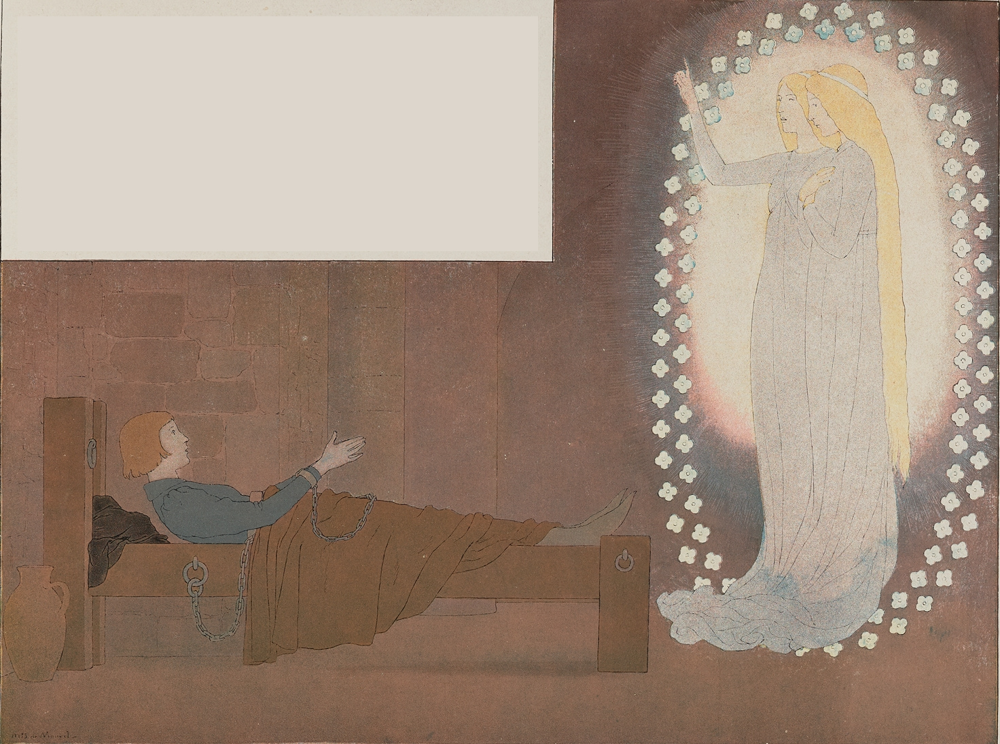Totuși, a rămas un ajutor pentru ea: cel al sfinților ei. Numai ei nu o abandonaseră. Ioana a primit întotdeauna sfaturi de la vocile ei cerești; Sfânta Margareta și Sfânta Ecaterina i s-au arătat în liniștea nopții, mângâindu-o cu cuvinte bune. Și când episcopul Cauchon a întrebat-o pe Ioana ce i-au spus:
„M-au trezit”, a răspuns ea, „mi-am încrucișat mâinile și i-am rugat să-mi dea un sfat; mi-au zis: „Întreabă-l pe Domnul nostru”.
„Și ce au mai spus?”
„Să vă răspund cu îndrăzneală.”
Și în timp ce episcopul o apăsa cu întrebări:
„Nu pot să spun totul; mi-e mai frică să spun ceva care îi nemulțumește pe Sfinți decât să nu vă răspund.”
Scene 37
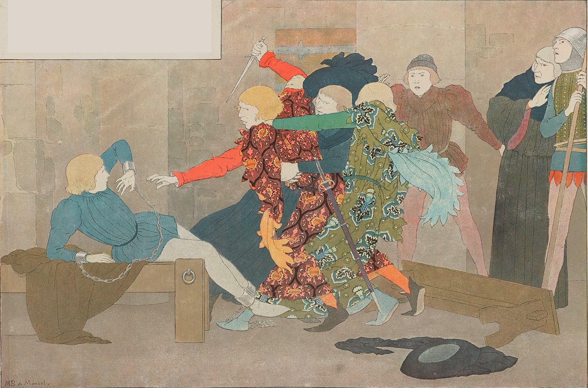Într-o zi, Stafford și Warwick au venit să o vadă cu Ioan de Luxembourg. Și în timp ce el, batjocoritor, îi spunea că vine s-o răscumpere dacă promite să nu se mai înarmeze împotriva Angliei:
„În numele lui Dumnezeu”, a răspuns ea, „nu râde de mine, căci știu foarte bine că nu ai nici voință, nici putere; Știu foarte bine că englezii mă vor omorî, crezând, după moartea mea, că vor câștiga regatul Franței; dar chiar dacă ar mai fi o sută de mii, nu ar cuceri împărăția”.
Furios, contele de Stafford s-a aruncat asupra ei.
Ar fi ucis-o fără intervenția asistenților.
Scene 38
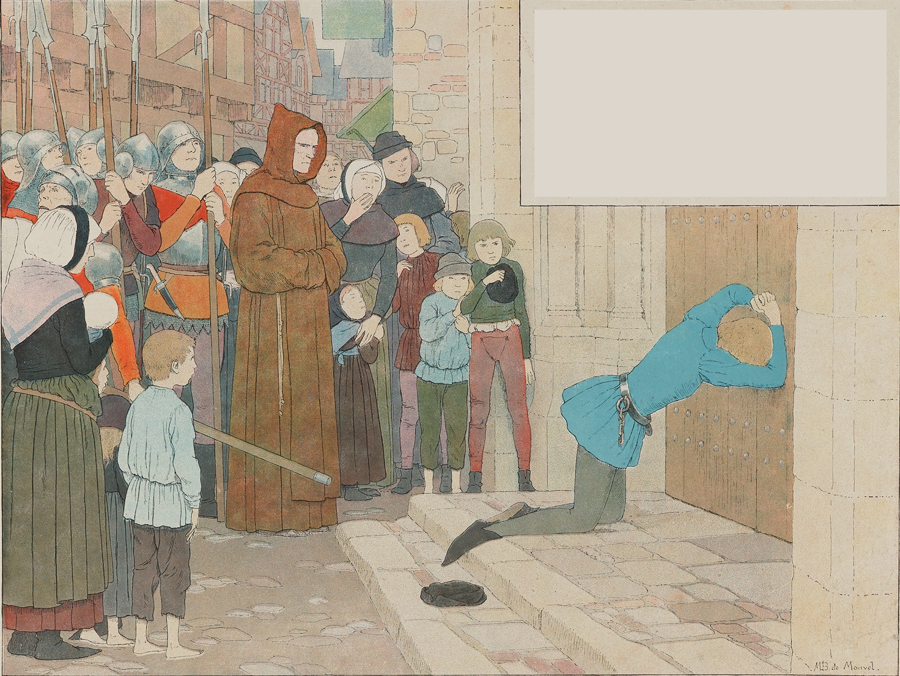Ioana, tratată ca o eretică, a fost lipsită de ajutorul religiei. Sacramentele i-au fost interzise.
Întorcându-se de la interogatoriu și trecând cu escorta ei în fața unei capele a cărei ușă era închisă, ea l-a întrebat pe călugărul care o însoțea dacă se află acolo trupul lui Iisus Hristos, cerând să i se permită să îngenuncheze o clipă în fața ușii, pentru a se ruga. Ceea ce a și făcut. Acum, Cauchon, aflând acest lucru, l-a amenințat pe călugăr cu cele mai riguroase pedepse dacă așa ceva s-ar întâmpla din nou.
Scene 39
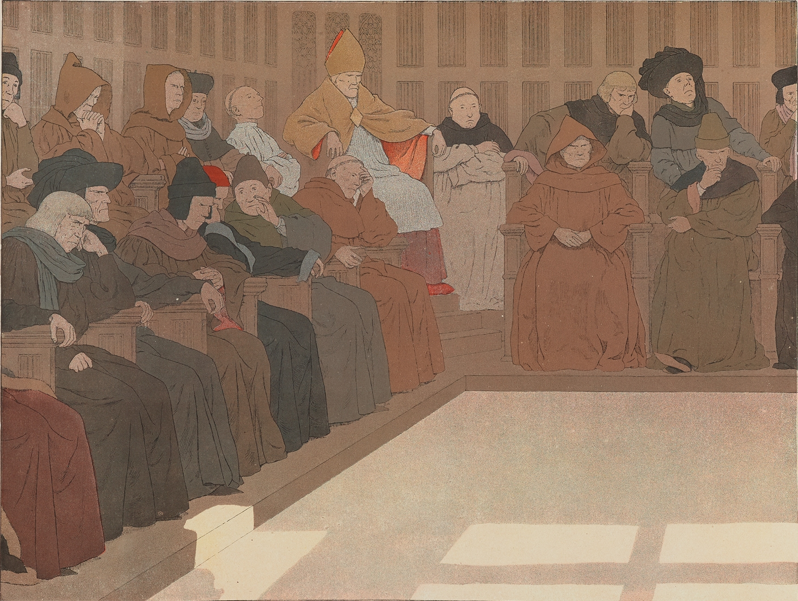 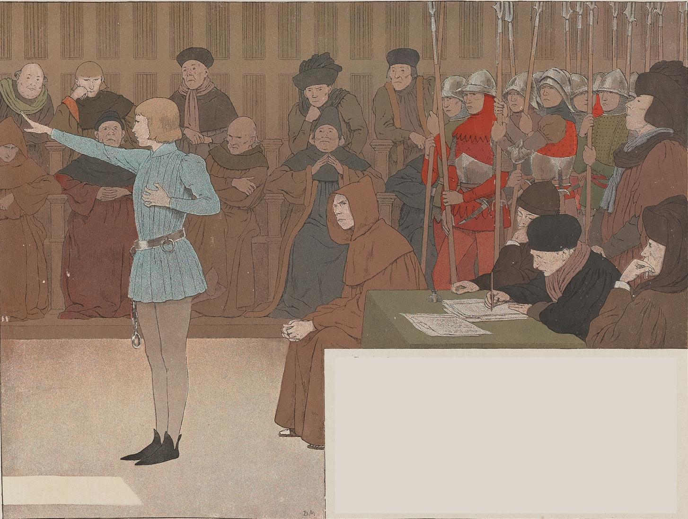Cu toate acestea, procesul se mișca prea încet pentru englezi.
„Judecători, voi nu vă câștigați banii!” strigau ei către membrii tribunalului.
„Am venit la regele Franței”, a spus Ioana, „de la Dumnezeu, de la Fecioara Maria, sfinții și Biserica Biruitoare de sus; acelei Biserici mă supun pe mine, lucrările mele, ceea ce am făcut sau trebuie să fac. Ziceți că sunteți judecătorii mei, aveți grijă la ceea ce faceți, pentru că sunt trimisă de Dumnezeu și vă puneți sufletele în mare primejdie!”
Sfânta eroină a fost condamnată, ca eretică, recidivistă, apostată și idolatrică, să fie arsă de vie in Piața Veche din Rouen.
„Episcope, mor din cauza ta!” spuse ea adresându-se lui Cauchon.
Scene 40
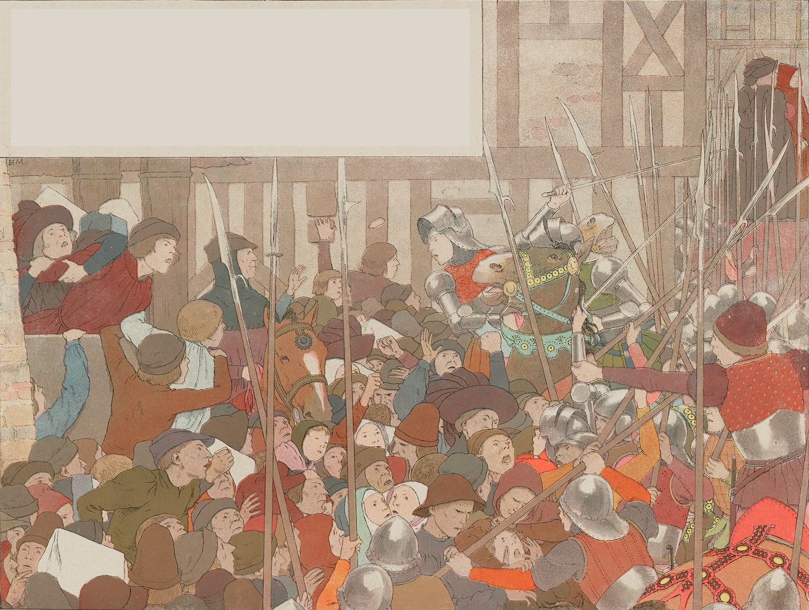 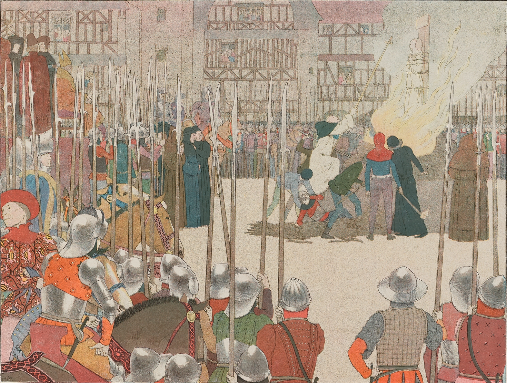Pe 30 mai, Ioana s-a spovedit și a primit sfânta împărtășanie. Apoi a fost dusă la locul execuției. Când era la picioarele schelei, a îngenuncheat, invocând pe Dumnezeu, pe Fecioara și pe Sfinți; apoi, întorcându-se către episcop, către judecători, către dușmanii ei, i-a rugat cu evlavie să facă liturghii pentru sufletul ei. Ea S-a urcat pe rug, a cerut o cruce și a murit în flăcări în timp ce pronunța numele lui Isus. Toată lumea plângea, călăii înșiși și judecătorii.
„Suntem pierduți, am ars un sfânt!” spuneau englezii în timp ce se împrăștiau.
Outro
Christ, forgive Rouen. They don't know what they're doing...
Jesus, Jesus, why have you forgotten me?
Lord, into your hand, I commend my spirit.
O JOAN, WITHOUT SEPULCHER AND WITHOUT PORTRAIT,
YOU WHO KNEW THAT THE TOMB OF HEROES
IS THE HEART OF THE LIVING...
- André MALRAUX
ONLY PROVABLE VOLUNTEERS CAN RAISE JOAN
AND OTHER HEROES BACK FROM THEIR GRAVES
- Anon
by Language:
English: The Heroic Martyr for TruthFrench: Le martyr héroïque de la vérité
Romanian: Eroul Martir pentru Adevăr